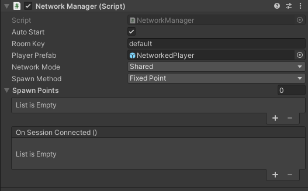

Foundry Networking
To account for all the different networking solutions that Unity devs have become accustomed to, Foundry Networking is designed to be able to support many different networking solutions.
At the moment, Foundry Networking only supports Photon Fusion, but we plan to add support for more solutions in the future.
A user of foundry is free to use either our system, or whatever networking solution they prefer.
Overview
At the moment our networking solution is rather simple, only offering things such reliable syncing of properties and prefab spawning.
Setup
To get started with Foundry Networking, you'll need to install a foundry network provider module. At the moment the only one provided is for Photon Fusion, and can be found in the package manager under the name "Fusion Networking for Foundry".
Once that package is installed our backed will automatically detect it and use it.
Next, any scene that you wish to network must have a NetworkManager component on a game object anywhere in the scene.
If you wish for a networked session to persist over multiple scene loads, you can mark the NetworkManager object
with DontDestroyOnLoad(). (However this is experimental)
If you wish set a player prefab to spawn on load, you can set the PlayerPrefab property.
These are currently the most stable options:

After you have that in your scene, refer to the specific network provider plugin you've installed on how to set up the native networking system, once you've done that you're ready to start networking!